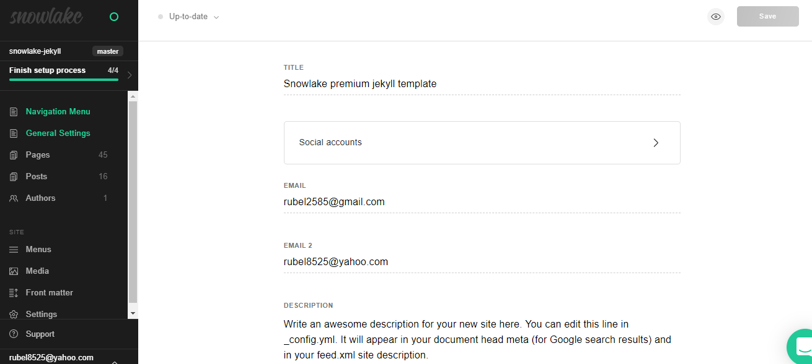
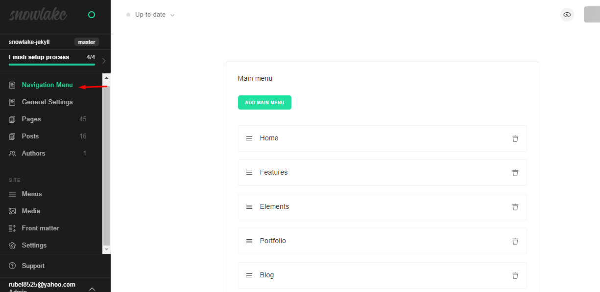
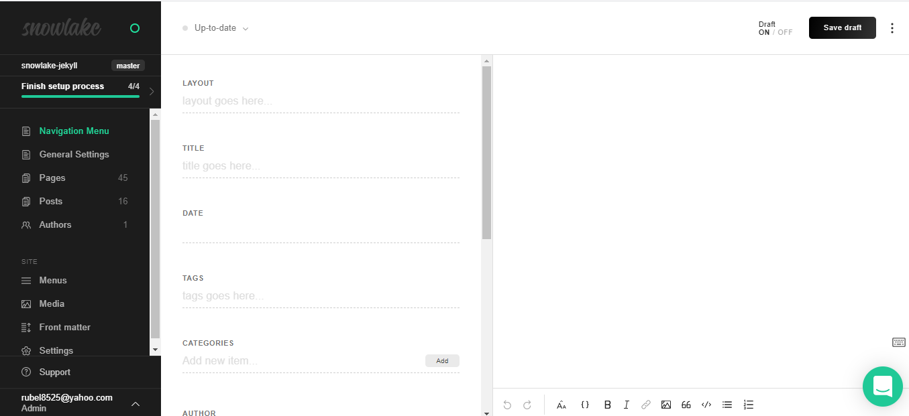
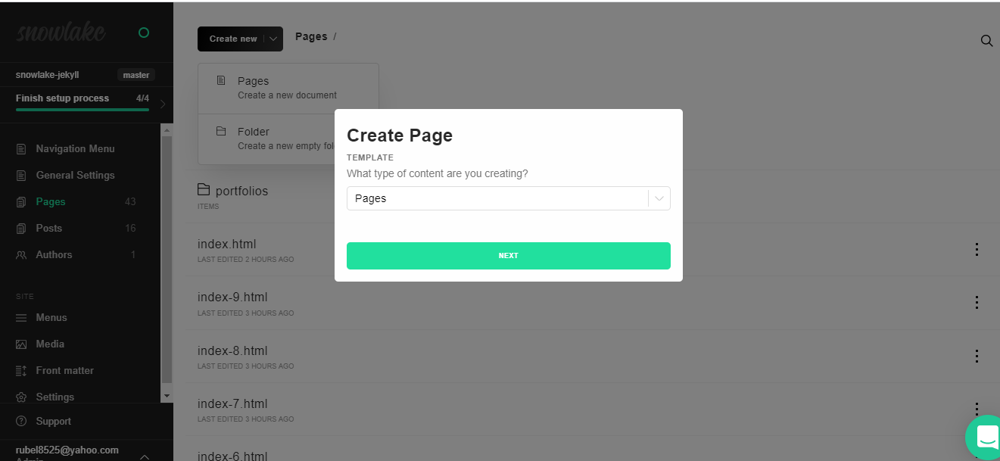
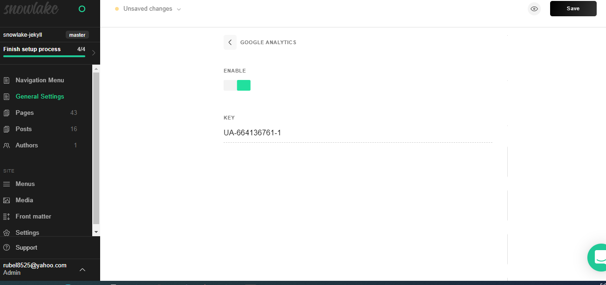
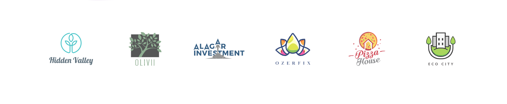
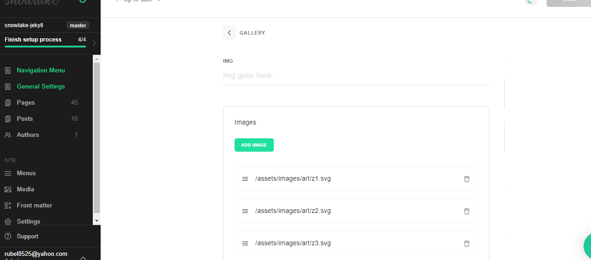
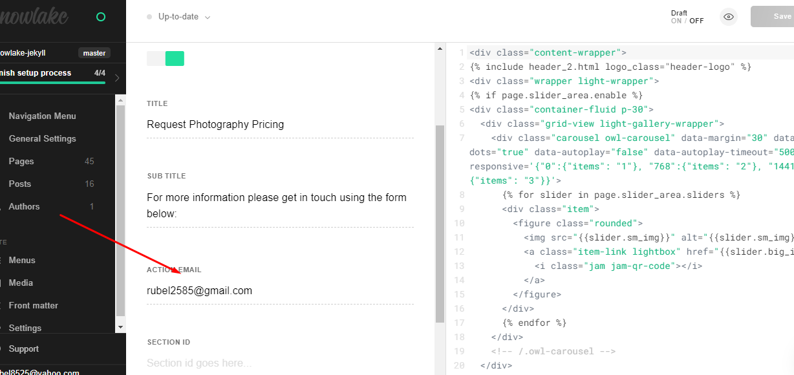

Table of Contents
- General Settings
- Menu Settings
- Create Post
- Create Page
- Disqus Comments
- Google Analytics
- Social Media Links
- Gallery Carousel
- Contact Form
- Google Map
- Deployment
- Credits
General Settings
Snowlake theme comes with different customizations in the _data/general_settings.yml General Settings Files file:
Our Theme Is Forestry CMS Supported, if you want you can use forestry, it will be more easyer setting and updating everytingh, so we heighly recomand you to use forestry for more details browse https://forestry.io/
In forestry in the left sidebar click general settings button, then you can change all general information from here,
If you not use forestry you have to change data from _data/general_settings.yml file
# General Settings
title: "Snowlake premium jekyll template"
email: "rubel2585@gmail.com"
email_2: "rubel8525@yahoo.com"
description: >- # this means to ignore newlines until "baseurl:"
Write an awesome description for your new site here. You can edit this
line in _config.yml. It will appear in your document head meta (for
Google search results) and in your feed.xml site description.
black_logo_1x: "/assets/images/logo.png"
black_logo_2x: "/assets/images/logo@2x.png"
light_logo_1x: "/assets/images/logo-light.png"
light_logo_2x: "/assets/images/logo-light@2x.png"
twitter_username: jekyllrb
github_username: jekyll
address_01: 'Moonshine St. 14/05
Light City, London'
phone_number: "+00 (123) 456 78 90"
copyright_text: "© 2020 Snowlake. All rights reserved."
social_accounts:
title: "Follow Us"
links:
- url: "#"
icon: "jam jam-twitter"
- url: "#"
icon: "jam jam-facebook"
- url: "#"
icon: "jam jam-instagram"
- url: "#"
icon: "jam jam-vimeo"
- url: "#"
icon: "jam jam-youtube"
external_links:
title: "Learn More"
links:
- url: "#"
text: "About Us"
- url: "#"
text: "Our Story"
- url: "#"
text: "Projects"
- url: "#"
text: "Pricing"
- url: "#"
text: "Features"
external_links_02:
title: "Need Help?"
links:
- url: "#"
text: "Support"
- url: "#"
text: "Get Started"
- url: "#"
text: "Contact Us"
- url: "#"
text: "Terms of Use"
- url: "#"
text: "Privacy Policy"
external_links_03:
title: "Company"
links:
- url: "#"
text: "Our Team"
- url: "#"
text: "Strategy"
- url: "#"
text: "Service"
- url: "#"
text: "Mission"
- url: "#"
text: "Process"
footer_newsletter:
title: "Our Newsletter"
sub_title: "Subscribe to our newsletter to get our news & deals delivered to your inbox!"
subscribe_button_text: "Join"
one_page_nav_settings:
links:
- text: "Home"
url: "#home"
- text: "Services"
url: "#services"
- text: "Experiences"
url: "#experiences"
- text: "Portfolio"
url: "#portfolio"
- text: "Testimonials"
url: "#testimonials"
- text: "Contact"
url: "#contact"
author_page_header:
header_background_image: "/assets/images/art/bg31.jpg"
Navigation Menu Settings
In forestry click sidebar's Navigation Menu Buttons, from here you can change menu text and url
if you are not using Forestry Go to _data/navigation.yml file and change here menu text and url
Create Post
For Forestry Click Posts Link >> Create New > Posts thats it, now you can create a new post from here
Or To create a new post, you can create a new markdown file inside the _posts directory, following the recommended file structure, these are the page configuration you can add.
The following is an example post file.
---
layout: post
title: "Nullam id dolor elit id nibh pharetra augue venenatis"
date: 2020-10-03 20:37:13 +0600
categories: [couples]
author: "Tortoiz Theme"
post_image: "/assets/images/art/b16.jpg"
---
You can set the author, featured or not, tags, and the post image
The featured key is to mark the post as a featured post, this will add a simple star icon (☆) to the post created.
To keep things more organized, add post images to /images/pages directory, and add add page images to /images/pages directory.
To create a draft post, create your draft file under the _drafts directory, and you can find more information at Working with drafts
Create Page
To create a new page, just create a new markdown file inside the _pages directory, and these are the page configuration you can add.
The following is the about.md file that you can find as an example included in the theme.
---
layout: page
title: "Classic Grid Blog"
sub_title: "Aenean lacinia bibendum nulla sed consectetur Test"
header_image: "/assets/images/art/bg31.jpg"
white_menu: true
---
In Forestry Click Pages >> Create New select Pages, thats it, now you can write something in your new page

Things you can change are: title, permalink, and image path.
Disqus Comments
Aspire Theme comes with Disqus comments enabled.
Open _includes/disqus.html file, and change the design_grid value in line 15 with your Disqus account shortname.
s.src = '//snowlake.disqus.com/embed.js';
So, if your Disqus shortname is `exampleone`, the final code above should be
s.src = '//exampleone.disqus.com/embed.js';
That’s all what you need to setup Disqus from the theme side. If you get any issue regarding that comments are unable to load. First make sure you have registered your website with Disqus (Step 1)
And also check Disqus troubleshooting guide if you still have issues.
Google Analytics
To integrate Google Analytics, open _includes/analytics.html and add your Google Analytics code.
in forestry go to general settings select Google analytics click to enable and give the key
Or Go to _data/general_settings.yml file and change the key and enable
Social Media Links
Social media icons are placed in:
_data/general_settings.yml
The theme is using jam Icons, which contains very simple and clean icons. Here you can find a list of the social media icons to use:
social_accounts:
title: "Follow Us"
links:
- url: "#"
icon: "jam jam-twitter"
- url: "#"
icon: "jam jam-facebook"
- url: "#"
icon: "jam jam-instagram"
- url: "#"
icon: "jam jam-vimeo"
- url: "#"
icon: "jam jam-youtube"
For Forestry Go To General Settings Select Social Accounts, give icon class and url.
Gallery Carousel
For Changing Gallery Carousel's Images Goto General Settings >> Gallery >> change or upload images here
Contact Form
please signup here, https://formsubmit.io/ , For Contact Form We Heighly Recomand you To use https://formsubmit.io/ it's free and perfect for static sites, when user submit any form you will recove email with users messages. in contact area set your email in action_email.
You can also add two email globally from general settings
Google Map Settings
For Google Map Embed Goto https://www.embedgooglemap.net/ search your location get html code and embed this code in you pages map_iframe option.
Deployment
To install locally, more to the theme root and run bundle install to install the dependencies, then run jekyll serve to start the jekyll server.
I would recommend checking the Deployment methods page on Jekyll website.
Credits
We have used the following scripts, fonts or other files as listed.
- Jam Icons
- FitVids.js
- jekyll/tagging
- Preview Images form unsplash.com & pexels.com